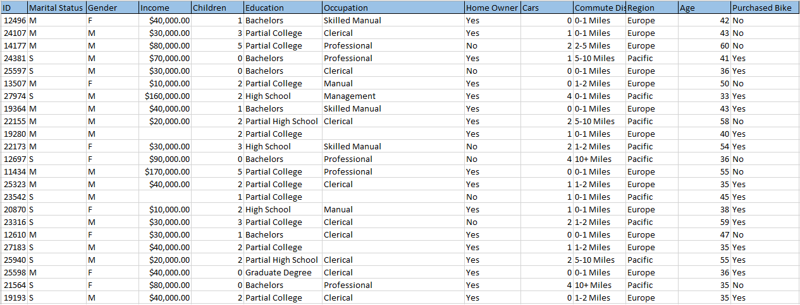
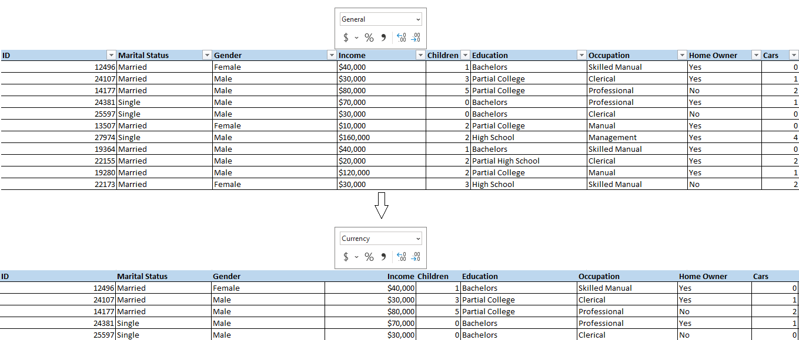
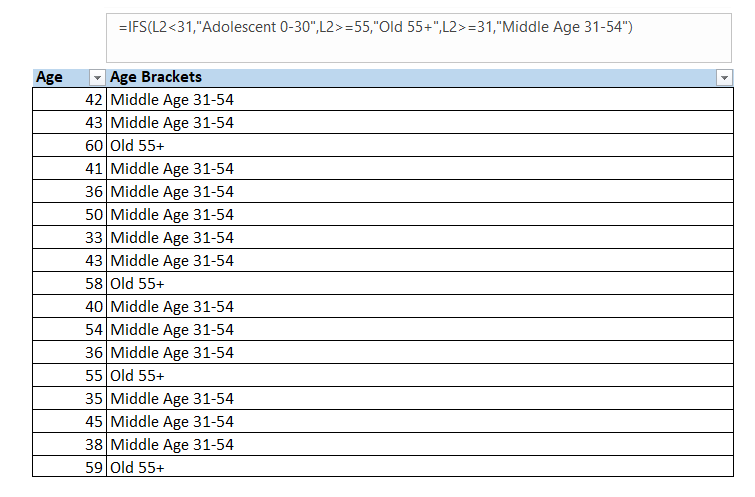
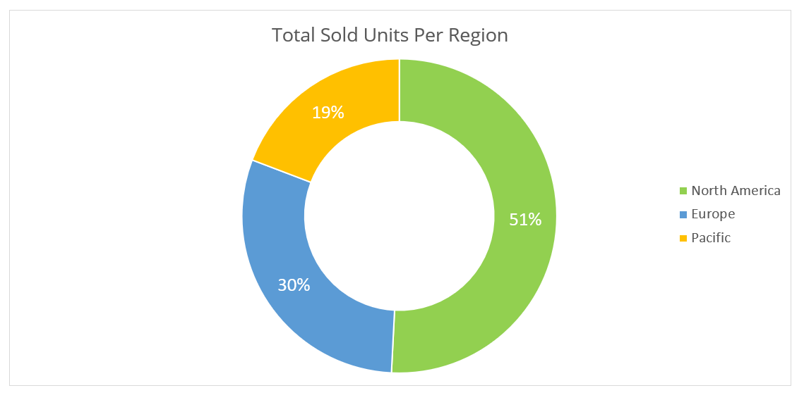
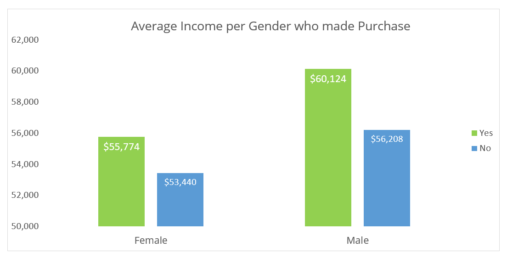
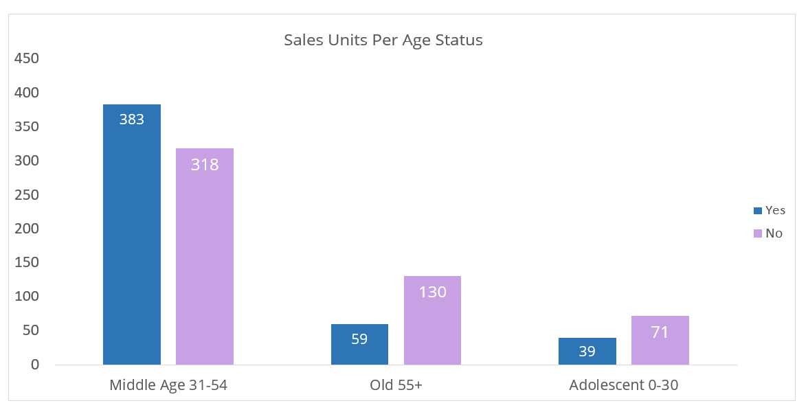
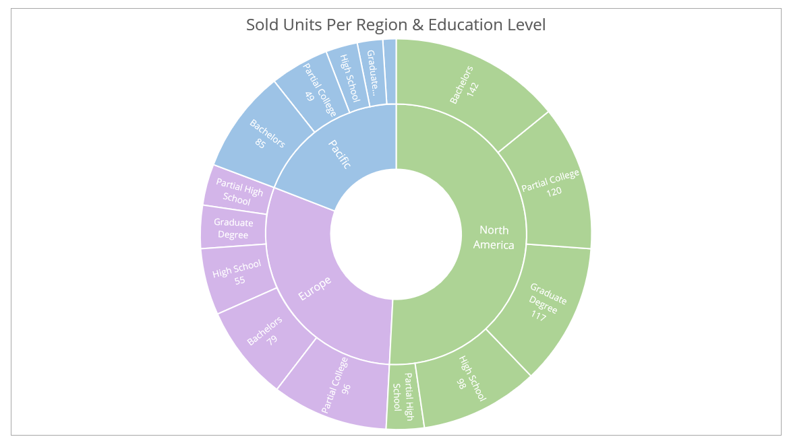
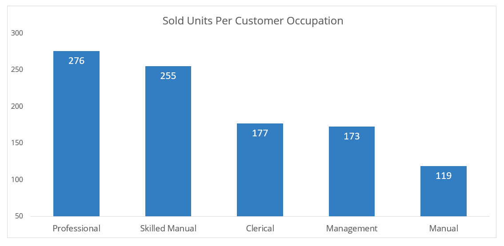
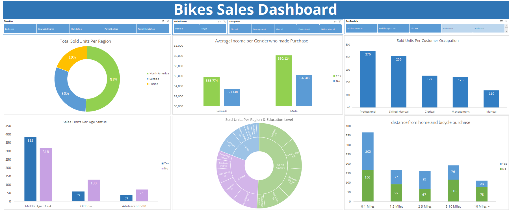

Bike Market Dynamics: Advanced Analytics for Informed Sales Strategies

Project Description:
The analysis of bike sales data reveals key insights into market dynamics, with a focus on regional sales, gender-based income differences, age demographics, education patterns, and occupation preferences.
Key Steps:
Data Exploration:
Initiated the analysis by thoroughly exploring the dataset to understand its structure, variables, and overall content.
Data Cleaning:
Dealing with missing values using statistical methods such as the mean for numeric data, and the mode for categorical data, which is so necessary to handle missing values for accurate analysis.
Fixing data type of 'Income' Column to Currency DataType
Categorization and Labeling:
Categorized variables, such as age brackets and education levels, to facilitate clearer analysis and interpretation. Introduced labels like "Middle Age 31-54" and "Old 55+" for better segmentation.
Formulation of Data Analysis Questions:
Developed a set of focused questions aimed at extracting meaningful insights from the dataset. These questions covered key aspects like regional sales, gender-based income differences, age demographics, education patterns, and occupation preferences:
1- Which region has the highest total sales? Answer: North America
2- Is there a significant income difference between male and female customers who made a purchase, and what implications might this have for targeted marketing strategies?
Answer: Yes, there is a difference, but it's not substantial. Implications could include adjusting marketing strategies to appeal to both genders equally.
3- What is the distribution of sales units among different age brackets, and is there a particular age group that contributes significantly to sales?
Answer: Yes, the middle age brackets contribute significantly to sales.
4- Do certain education levels exhibit consistent sales patterns across all regions, or are there notable variations?
Answer: Bachelor and partial college education levels show consistent high sales patterns across all regions.
5- Which occupation category has the highest number of sold units, and what insights can be derived from this information?
Answer: Professionals have the highest number of sold units. Insights include high disposable income and potential for premium product sales. Data Visualization:
Data Visualization Development:
Designed a dashboard overview with a variety of charts and graphs, including bar charts for regional sales, pie charts for gender distribution, and line graphs for age demographics. These visualizations served as a powerful means to convey key findings.

Insights Extraction:
Extracted insights from the data, identifying patterns, trends, and correlations that directly addressed the formulated questions:
Informed Regional Strategies:
The knowledge of North America's sales dominance guides decision-makers to invest resources and efforts in replicating successful strategies in other regions.
Targeted Age Group Marketing:
The emphasis on middle age brackets directs marketing efforts toward understanding and catering to the preferences of this demographic, potentially resulting in increased sales.
Strategic Occupation-Based Offerings:
Introducing premium or specialized products tailored to professionals aligns with their potential higher purchasing power, leading to more targeted and effective marketing.
Gender-Neutral Marketing:
Decision-makers can implement marketing strategies that appeal to both genders, acknowledging the income difference but ensuring inclusivity in product messaging.
Recommendations for Future Actions or Improvements:
Expand Regional Strategies:
Conduct market research to identify successful strategies in Europe and the Pacific, considering factors that contribute to sales in these regions.
Deepen Understanding of Middle Age Demographic:
Initiate surveys or focus groups targeting individuals aged 31-54 to gain deeper insights into their preferences and behaviors, shaping future product development and marketing strategies.
Continuous Monitoring and Adjustment:
Establish a system for regular monitoring of sales data, customer feedback, and market trends to adapt strategies based on evolving consumer behaviors and preferences.
Conclusion:
In conclusion, the in-depth analysis of bike sales data has unearthed invaluable insights that serve as a compass for strategic decision-making. From discerning regional nuances to understanding the purchasing behavior of diverse demographics, this project has not only illuminated the current state of affairs but has also laid the groundwork for a more targeted and effective approach to sales.
The identification of North America as the powerhouse for total sales underscores the need for a nuanced regional strategy. The nuanced understanding of gender-based income differences, age group preferences, and the influence of education levels has paved the way for more personalized marketing efforts. Leveraging these insights, decision-makers are now equipped to refine their approaches, ensuring that marketing strategies resonate with diverse customer segments.
For a detailed review of the entire dashboard and dataset, please visit the project's repository. View Code on GitHub